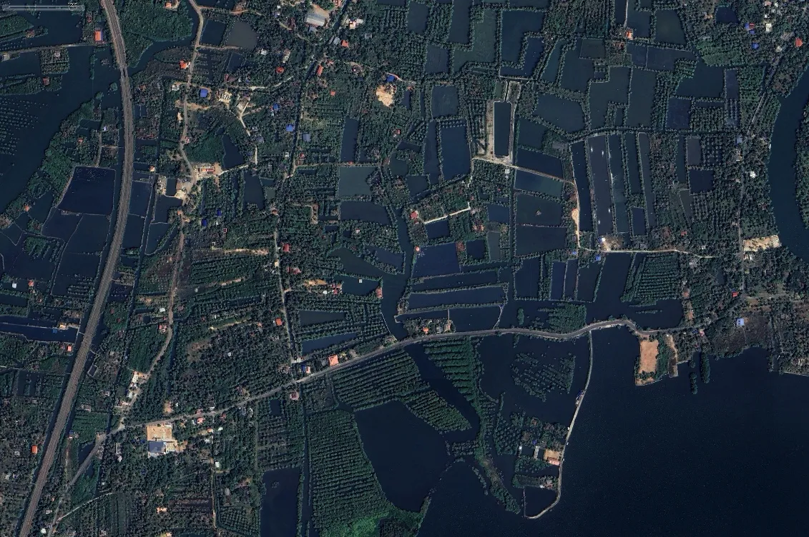
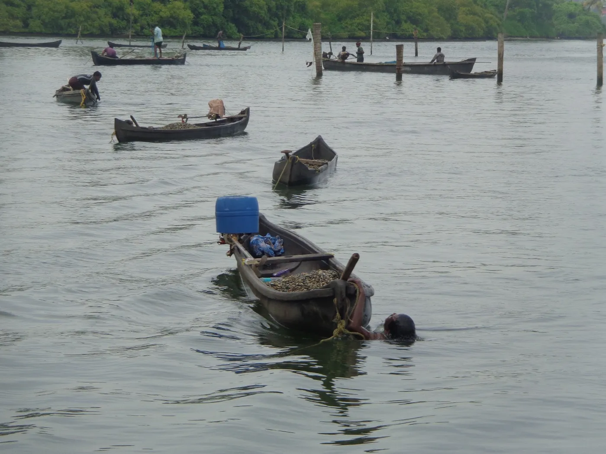
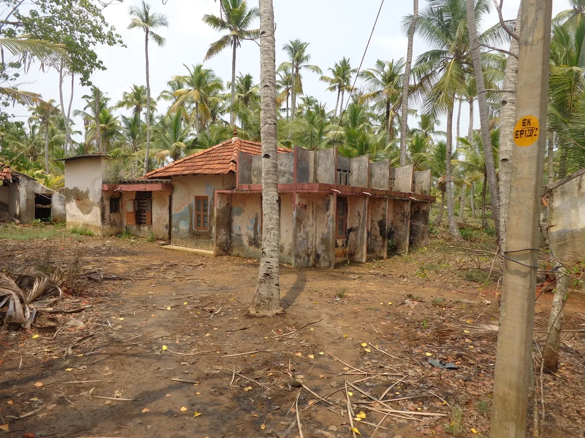
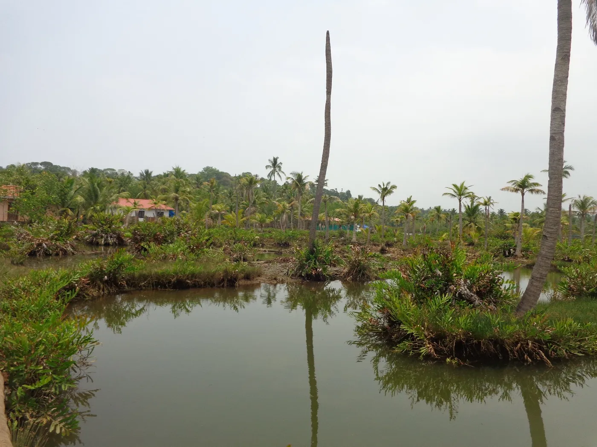

കൊല്ലം ജില്ലയിലെ അഷ്ടമുടികായലിൽ പ്രകൃതിയും മനുഷ്യനും ചേർന്ന് സൃഷ്ടിച്ച മനോഹരമായ ഒരു ദ്വീപുസമൂഹമാണ് മൺറോതുരുത്ത്. കായലിന്റെയും കല്ലടയാറിന്റെയും ഇടയിൽ വിരിഞ്ഞുകിടക്കുന്ന ഈ തുരുത്തുകൾ ഒരുകാലത്ത് സമൃദ്ധിയുടെയും സ്വയംപര്യാപ്തതയുടെയും പ്രതീകമായിരുന്നു. വളക്കൂറുള്ള എക്കൽമണ്ണും, പ്രകൃതിയുടെ താളത്തിൽ ജീവിച്ച കാർഷികസംസ്കാരവും, മനുഷ്യനും പരിസ്ഥിതിയും തമ്മിലുള്ള സൂക്ഷ്മമായ സഹവർത്തിത്വവും ചേർന്നാണ് ഇവിടെ ഒരു പ്രത്യേക ജീവിതരീതിയെ രൂപപ്പെടുത്തിയിരുന്നത്. എന്നാൽ കാലക്രമേണ ആ സമൃദ്ധിയുടെ കഥ മാറിത്തുടങ്ങി. കാലാവസ്ഥാ വ്യതിയാനവും, നദിയുടെ ഒഴുക്ക് തടഞ്ഞ അണക്കെട്ടും, അനിയന്ത്രിത ഖനനവും, പരിസ്ഥിതിസന്തുലിതാവസ്ഥയിലെ മാറ്റങ്ങളും ചേർന്ന് തുരുത്തിന്റെ ഭൂപ്രകൃതിയെയും ജനജീവിതത്തെയും ആഴത്തിൽ ബാധിച്ചു. ഒരിക്കൽ “കൊല്ലത്തിന്റെ നെല്ലറ” എന്നറിയപ്പെട്ടിരുന്ന ഈ പ്രദേശം ഇന്ന് ഉപ്പുവെള്ളക്കയറ്റം, ഭൂമി താഴൽ, കൃഷിനാശം തുടങ്ങിയ ഗുരുതര പ്രശ്നങ്ങളുമായി പോരാടുകയാണ്. എന്നിരുന്നാലും, ഈ കഥ പൂർണ്ണമായും നിരാശയുടെതല്ല. വെല്ലുവിളികൾക്കിടയിലും പുതിയ വഴികൾ തേടുന്ന ഒരു ജനതയുടെ കഥ കൂടിയാണ് ഇത്. ഇങ്ങനെ സമൃദ്ധിയുടെ ചരിത്രവും, പരിസ്ഥിതി പ്രതിസന്ധികളും, പുതിയ പ്രതീക്ഷകളുമായി മുന്നോട്ടുപോകുന്ന മൺറോതുരുത്തിന്റെ യാത്രയാണ് ഈ ലേഖനം അന്വേഷിക്കുന്നത്.

പശ്ചിമഘട്ടത്തിലെ കരിമല മലനിരകളിൽ, സമുദ്രനിരപ്പിൽ നിന്ന് ഏകദേശം 1,524 മീറ്റർ ഉയരത്തിൽ ഉത്ഭവിക്കുന്ന കല്ലടയാർ, മലനിരകളിലെ വളക്കൂറുള്ള മണ്ണും വഹിച്ചു കൊണ്ട് അതിവേഗം ഒഴുകി അഷ്ടമുടി കായലിൽ പതിക്കുന്നു. കായലുമായി ചേരുന്ന ഭാഗത്ത് നദിയുടെ വേഗത കുറയുന്നതോടെ, കാലങ്ങളായി ഒഴുകിയെത്തിയ എക്കൽ മണ്ണും കടലിൽ നിന്ന് വരുന്ന മണ്ണും അവിടെ അടിഞ്ഞുകൂടാൻ തുടങ്ങി. ദശലക്ഷക്കണക്കിന് വർഷങ്ങളായി തുടർന്ന ഈ പ്രക്രിയയിലൂടെ അവിടെ വിശാലമായ ഒരു ഡെൽറ്റ പ്രദേശം രൂപപ്പെട്ടു പിന്നീട്, ഏകദേശം 200 വർഷങ്ങൾക്ക് മുമ്പ്, തിരുവിതാംകൂർ ദിവാനും കോട്ടയം സി.എം.എസ്. കോളേജിന്റെ സ്ഥാപകനുമായ കേണൽ ജോൺ മൺറോയുടെ നിർദ്ദേശപ്രകാരം, കായലിൽ നിന്ന് മണ്ണ് കോരിയെടുത്ത് ഇവ വീണ്ടും ഉയർത്തി മനുഷ്യവാസയോഗ്യമായ എട്ട് പ്രധാന തുരുത്തുകളും നിരവധി ചെറിയ തുരുത്തുകളും രൂപപ്പെടുത്തി. മഴക്കാലത്ത് കല്ലടയാറിന്റെ കുത്തൊഴുക്കിൽ മൃദുവായ എക്കൽ മണ്ണിനാൽ രൂപപെട്ടതും മനുഷ്യകരങ്ങളാൽ രൂപപെടുത്തിതിയതുമായ ഈ പ്രദേശം ഒലിച്ചുപോകാതിരിക്കാൻ ചെറു തോടുകളും 50 മീറ്റർ വീതിയുള്ള ‘പുത്തനാർ’ എന്ന കനാലും അന്ന് നിർമ്മിച്ചു. പിന്നീട് കേണൽ മൺറോയോടുള്ള ബഹുമാനാർത്ഥം ചർച്ച് മിഷനറി സൊസൈറ്റി “മൺറോതുരുത്ത്” എന്ന് പേരിട്ട ഈ പ്രദേശം ഉൾപ്പെടുന്ന അഷ്ടമുടി കായൽ, 2002-ൽ റാംസാർ കൺവെൻഷന്റെ അടിസ്ഥാനത്തിൽ അന്താരാഷ്ട്ര തണ്ണീർത്തട സംരക്ഷണ പട്ടികയിലും ഇടംപിടിച്ചു. ഏകദേശം 13.37 ചതുരശ്ര കിലോമീറ്റർ വിസ്തൃതിയുള്ള, ഈ തുരുത്തുകളിൽ 2011-ലെ സെൻസസ് പ്രകാരം 9,440-ഓളം പേർ അധിവസിക്കുന്നു1.

ആദ്യകാലം മുതൽ കൃഷിയായിരുന്നു മൺറോതുരുത്തുകാരുടെ പ്രധാന ഉപജീവനമാർഗം. നെല്ല്, തെങ്ങ്, കുരുമുളക് തുടങ്ങിയ വിളകൾക്കു സമൃദ്ധമായി വളരാൻ സാധിക്കുന്ന വളക്കൂറുള്ള എക്കൽമണ്ണ് ഇവിടെയുള്ള കൃഷിയെയും അതുമായി ബന്ധപെട്ടുള്ള ജീവിതത്തെയും സഹായിച്ചു. അതിനാൽ തന്നെ ഓരോ വർഷവും കല്ലടയാറിലുണ്ടാകുന്ന വെള്ളപ്പൊക്കം തുരുത്തിലെ ജനങ്ങൾക്ക് ഒരേസമയം തല്ലലും തലോടലുമായിരുന്നു. വെള്ളപ്പൊക്കത്തിലൂടെ വരുന്ന എക്കൽമണ്ണ് വിളകളെ പോഷിപ്പിക്കുകയും കൃഷി ആവശ്യത്തിനായി നദിയിൽ നിന്നും മറ്റും ഈ എക്കൽ മണ്ണ് വാരി തുരുത്തിൽ ഇടുന്നത് വഴി അത് തുരുത്തിനെ തന്നെ ഉയർത്തി ബലപ്പെടുത്തുകയും ചെയ്തു. അങ്ങനെ അറിഞ്ഞോ അറിയാതെയോ മനുഷ്യനും പ്രകൃതിയും തമ്മിലുള്ള ഈ സഹവർത്തിത്വം മൺറോതുരുത്തിന് സമൃദ്ധിയുടെ സുവർണകാലം സമ്മാനിച്ചു. കോട്ടയത്തുള്ള സി എം എസ് കോളേജിന്റെ ആദ്യകാല പ്രവർത്തനനത്തിനുള്ള മൂലധനം മൺറോതുരുത്തിലെ കാർഷികവരുമാനത്തിൽ നിന്ന് കണ്ടെത്താൻ സാധിച്ചിരുന്നു എന്നറിയുമ്പോളാണ് ഈ മണ്ണിന്റെ മഹത്വം നമുക്ക് മനസിലാകുന്നത്. ഈ സമൃദ്ധി ഏകദേശം 25 കിലോമീറ്റർ അകലെയുള്ള കൊല്ലം നഗരത്തിൽ നിന്നുപോലും ആളുകളെ ഇവിടേക്ക് ആകർഷിച്ചു. പലരും നഗരത്തിലെ ഭൂമി വിറ്റ് മൺറോതുരുത്തിൽ കുടിയേറി. അങ്ങനെ പരമ്പരാഗത കൃഷിക്ക് പുറമെ തൊണ്ടുതല്ലൽ, കയർപിരി, മത്സ്യക്കൃഷി, ഇഷ്ടിക നിർമ്മാണം തുടങ്ങിയ വൈവിധ്യമാർന്ന തൊഴിലുകളും ഇവിടെ ഉടലെടുത്തു.

ഇങ്ങനെ ഒരുകാലത്തു സമൃദ്ധിയിൽ കഴിഞ്ഞിരുന്ന ജനത ഇരുപതാം നൂറ്റാണ്ടിന്റെ അവസാനത്തോടെ ദുരിതത്തിന്റെ ഉപ്പു നീര് കുടിക്കാൻ തുടങ്ങി. വേലിയേറ്റ സമയത്തു വീടുകളിലേക്ക് ഉപ്പുവെള്ളം കയറുകയും, വീടുകൾ താഴ്ന്നുപോകുകയും ചിലയിടങ്ങളിൽ തുരുത്തിന്റെ ഭാഗങ്ങൾ തന്നെ കായലായി മാറുകയും ചെയ്തതോടെ ജനങ്ങൾ പരിഭ്രാന്തരായി. മൺറോതുരുത്തിന്റെ ഭാഗമായ പെരിങ്ങാലം ദ്വീപിന്റെ 11.78 ശതമാനവും ചെറിയകടവ് ദ്വീപിന്റെ 46.95 ശതമാനവും നഷ്ടപ്പെട്ടതായി റവന്യൂ വകുപ്പിന്റെ കണക്കുകൾ വ്യക്തമാക്കുന്നു1. ഇതിന്റെയൊക്കെ പുറമെ ഉപ്പിന്റെ അമിത സ്വാധീനം മൂലം മണ്ണിന്റെ ഫലപുഷ്ടി നഷ്ടപ്പെടുകയും കൃഷിയെയും അനുബന്ധ വ്യവസായങ്ങളെയും ആശ്രയിച്ചിരുന്ന ജനതയ്ക്ക് കൃഷി തന്നെ ഭാരവും ബാധ്യതയുമാകുകയും ചെയ്തു. അങ്ങനെ ഒരു കാലത്ത് മൺറോതുരുത്തിൽ 1950-കളിൽ 227 ഏക്കർ ഉണ്ടായിരുന്ന നെൽകൃഷി 1995-ഓടെ 8 ഏക്കറായും, 2018-ഓടെ വെറും 2 ഏക്കറായും ചുരുങ്ങി1. പിന്നീട് നെൽകൃഷി നടന്ന സ്ഥലങ്ങൾ തെങ്ങിന്റെയും മറ്റ് വിളകളുടെയും കൃഷിയിലേക്ക് മാറിയെങ്കിലും ഉപ്പിന്റെ അമിത സാന്നിധ്യം അവയെയും നശിപ്പിച്ചു. ഇന്ന് മൺറോതുരുത്തിൽ ചെന്നാൽ തലപോയി നിൽക്കുന്ന തെങ്ങുകളും വെള്ളക്കെട്ടുകളും, ഉപ്പുവെള്ളം കയറി വിണ്ടുകീറിയും താഴ്ന്നുപോകുന്നതുമായ വീടുകളും അവക്കിടയിൽ ഒതുങ്ങി പോകുന്ന മനുഷ്യ ജീവിതങ്ങളെയും കാണാം. വെള്ളക്കെട്ടുകൾ കാരണവും അമിതമായ ജലസമ്പർക്കം മൂലവും രോഗങ്ങൾ വ്യാപിക്കുകയും ശുദ്ധജല സ്രോതസുകൾ മലിനമാവുകയും ഉപ്പുവെള്ളം കയറി ഉപയോഗസൂന്യമാവുകയും ചെയ്തതോടെ ശുദ്ധജല ദുർബല്യവും ജനതയെ ബാധിക്കാൻ തുടങ്ങി2. അങ്ങനെ ഒരിക്കൽ സമൃദ്ധി തേടി എത്തിയ ജനതയുടെ പിന്മുറക്കാർ മെച്ചപ്പെട്ട ജീവിതം തേടി തുരുത്ത് വിട്ട് മറുകരതേടാൻ തുടങ്ങി. കണക്കുകൾ പ്രകാരം ഏകദേശം 500-ഓളം കുടുംബങ്ങൾ ഇങ്ങനെ ഇവിടെ നിന്ന് ഒഴിഞ്ഞുപോയതായി കാണാം1. ആദ്യഘട്ടത്തിൽ ഈ ദുരിതം തുരുത്തിനുള്ളിലെ നെടുവീർപ്പുകളായി ഒതുങ്ങിക്കിടന്നെങ്കിലും, പിന്നീട് മാധ്യമങ്ങളിലൂടെയും ജനപ്രതിനിധികളിലൂടെയും ഇത് നിയമസഭയിലും പാർലമെന്റിലും ചോദ്യമായുയർന്നു. തുടർന്ന് നിരവധി സാമൂഹിക-ശാസ്ത്രീയ സ്ഥാപനങ്ങൾ ഈ പ്രദേശത്ത് പഠനങ്ങൾ നടത്താൻ തുടങ്ങി.

മൺറോതുരുത്തിൽ അനുഭവപ്പെടുന്ന പരിസ്ഥിതിമാറ്റങ്ങളെക്കുറിച്ചുള്ള ശാസ്ത്രീയ പഠനങ്ങൾ പ്രധാനമായും 21-ാം നൂറ്റാണ്ടിന്റെ രണ്ടാം ദശകത്തോടെയാണ് ആരംഭിക്കുന്നത്. 2004-ലെ ഇന്ത്യൻ മഹാസമുദ്ര സുനാമി ആണ് ഈ പ്രദേശത്തെ പരിസ്ഥിതിസമസ്യകൾക്ക് തുടക്കം കുറിച്ചതെന്നൊരു പൊതുവായ അഭിപ്രായം നിലനിൽക്കുന്നുണ്ടെങ്കിലും, ഈ വാദത്തെ പിന്തുണയ്ക്കുന്ന വ്യക്തമായ ശാസ്ത്രീയ തെളിവുകൾ ഇതുവരെ ലഭ്യമായിട്ടില്ല. സുനാമിക്ക് ശേഷമാണ് ഈ പ്രദേശത്ത് സംഭവിച്ചുവരുന്ന മാറ്റങ്ങൾ ജനങ്ങളുടെ ശ്രദ്ധയിൽ കൂടുതൽ കൂടുതലായി വന്നത് എന്ന് കരുതപ്പെടുന്നു; ഇതു തന്നെയാകാം ഒരുപക്ഷെ ഈ ദുരവസ്ഥയെ സുനാമിയുമായി ബന്ധപ്പെടുത്തി വ്യാഖ്യാനിക്കാൻ കാരണമായത്.
വീടുകൾ താഴ്ന്നുപോകുന്നതുമായി ബന്ധപ്പെട്ട പഠനങ്ങളിൽ ചിലത് നിർമാണരീതികളിലെ അപാകതകളെയും പ്രധാന ഘടകമായി ചൂണ്ടിക്കാണിക്കുന്നു3,4,5. മൺറോതുരുത്തിലെ മണ്ണ് മൃദുവും അയഞ്ഞതുമായ ഘടനയുള്ളതിനാൽ, ആധുനികകാലത്ത് വ്യാപകമായിരിക്കുന്ന ഭാരമേറിയ കെട്ടിടങ്ങളുടെ നിർമാണം ഈ ഭൗമഘടനയ്ക്ക് അനുയോജ്യമല്ല. ഇത്തരത്തിലുള്ള മണ്ണിൽ കെട്ടിടങ്ങൾ നിർമ്മിക്കുമ്പോൾ പ്രത്യേകമായ നിർമാണസാങ്കേതിക വിദ്യകൾ ആവിശ്യമാണ്. എന്നാൽ ഈ രീതികൾ നടപ്പിലാക്കുന്നതിന് ആവശ്യമായ സാമ്പത്തിക ചെലവ് വഹിക്കാൻ സാധിക്കാത്തതും, നിർമാണസാമഗ്രികൾ തുരുത്തിലേക്ക് എത്തിക്കുന്നതിലെ ബുദ്ധിമുട്ടുകളും സാങ്കേതിക അറിവിന്റെ അഭാവവും ഈ പ്രദേശത്തെ സാധാരണക്കാരായ ജനങ്ങളെ ഇത്തരം നിർമാണരീതികൾ സ്വീകരിക്കുന്നതിൽ നിന്ന് പിന്തിരിപ്പിക്കുന്നു. ഈ സാഹചര്യത്തിൽ ഭരണകൂടത്തിന്റെയും സാങ്കേതിക വിദ്യാഭ്യാസ സ്ഥാപനങ്ങളുടെയും ഇടപെടൽ അനിവാര്യമാണ്. തുരുത്തുമായി ബന്ധപ്പെട്ട പ്രശ്നങ്ങളെ കുറിച്ച് കേരള ശാസ്ത്രസാഹിത്യ പരിഷത്ത് ഉൾപ്പെടെ നടത്തിയ പഠനങ്ങൾ പ്രകാരം, ആഗോളതാപനത്തെ തുടർന്ന് കടൽനിരപ്പ് ഉയരുന്നതും കാലാവസ്ഥാ വ്യതിയാനവും, കൂടാതെ മൺറോതുരുത്തിലെ ചെറുക്കനാലുകൾ അടഞ്ഞു പോയതും ഒക്കെ ഇവിടെയുണ്ടാകുന്ന അസാധാരണമായ വേലിയേറ്റങ്ങൾക്ക് കാരണമാകുന്ന ഘടകങ്ങളായി രേഖപ്പെടുത്തിയിരിക്കുന്നു6,7. എന്നാൽ ഇതുവരെ ഇവിടെ നടത്തിയ മിക്ക പഠനങ്ങളും1,5,7,8 സൂചിപ്പിക്കുന്ന മറ്റൊരു പ്രധാന ഘടകം 1980-കളിൽ കല്ലട ജലസേചന പദ്ധതിയുടെ ഭാഗമായി നിർമ്മിച്ച തേന്മല അണക്കെട്ടാണ്. കിലോമീറ്ററുകൾക്ക് അപ്പുറത്തു ജലസേചന ആവശ്യത്തിനായി നിർമിച്ച ഈ അണക്കെട്ടിന് എങ്ങനെ ആണ് ഒരു ജനതയുടെ ജീവിതത്തെ ഇത്രയും ബാധിക്കാൻ കഴിയുന്നത് എന്ന് നമുക്ക് നോക്കാം.
മൺറോതുരുത്തിന്റെ രൂപീകരണത്തിലും നിലനിൽപ്പിലും കല്ലടയാറിന്റെ പങ്ക് നിർണായകമാണെന്നു നമുക്കറിയാമല്ലോ. ഈ സാഹചര്യത്തിൽ, പുഴയുടെ സ്വാഭാവിക ഒഴുക്ക് തടയുന്ന തരത്തിൽ അണക്കെട്ട് നിർമ്മിക്കപ്പെട്ടത് തുരുത്തിന്റെ നിലനിൽപിന് ആവിശ്യമായ എക്കൽ മണ്ണിന്റെ പ്രവാഹത്തെ തടസ്സപെടുത്തി അത് തുരുത്തിന്റെ പരിസ്ഥിതി സമതുലിതാവസ്ഥയെ ഗൗരവമായി ബാധിച്ചു5. ഇതിനോടൊപ്പംതന്നെ മൺറോതുരുത്തിനെ ചുറ്റിപ്പറ്റിയുള്ള പുഴകളിലും കായലുകളിലും കാർഷിക ആവശ്യങ്ങൾക്കുപുറമെ വ്യാവസായിക നിർമാണ ആവിശ്യങ്ങൾക്കായി മണലും മണ്ണും അനിയന്ത്രിതമായി ഖനനം ചെയ്യപ്പെട്ടതായി റിപ്പോർട്ടുകൾ സൂചിപ്പിക്കുന്നു1,5. ഈ അമിതമായ ഖനനം മൂലം ഉണ്ടായ മണ്ണിന്റെ കുറവ് നികത്താൻ കഴിയാതെ, അണക്കെട്ട് മൂലം ഒഴുക്ക് കുറഞ്ഞ കല്ലടയാർ ക്രമേണ ആഴം വർധിച്ച നിലയിലേക്ക് മാറി.
ദേശീയ ഭൗമശാസ്ത്ര പഠന കേന്ദ്രത്തിന്റെ (National Centre for Earth Science Studies , NCESS) പഠനങ്ങൾ പ്രകാരം, 1980-കളിൽ വേനൽക്കാലത്ത് പല ഭാഗങ്ങളിലൂടെയും നടന്ന് കടക്കാവുന്ന നിലയിലുണ്ടായിരുന്ന കല്ലടയാറിന്റെ ആഴം ഇന്ന് ചില പ്രദേശങ്ങളിൽ 14 മീറ്റർ വരെ എത്തിയിട്ടുണ്ട് എന്ന് കണ്ടെത്തുകയുണ്ടായി1. ഈ ആഴവർധന പ്രദേശത്തെ ജലചലനവ്യവസ്ഥയിൽ ഗൗരവമായ മാറ്റങ്ങൾ സൃഷ്ടിച്ചു. അഷ്ടമുടി കായൽ കടലുമായി ചേരുന്ന ഭാഗത്തേക്കാൾ കല്ലടയാറിന്റെയും കായലിന്റെ ഉൾഭാഗങ്ങളുടെയും ആഴകൂടുതൽ വേലിയേറ്റ സമയത്ത് കായലിലേക്കും തുടർന്ന് കല്ലടയാറിലേക്കും പ്രവേശിക്കുന്ന ഉപ്പുവെള്ളം, ഉയർന്ന സാന്ദ്രത കാരണം ആഴമുള്ള പ്രദേശങ്ങളിൽ ദീർഘകാലം നിലനിൽക്കാൻ തുടങ്ങി. ഈ പ്രദേശങ്ങൾ മൺറോതുരുത്തിനോട് ചേർന്നുള്ളവയായതിനാൽ, മുമ്പ് വർഷത്തിൽ ചില മാസങ്ങളിൽ മാത്രമുണ്ടായിരുന്ന ഉപ്പുവെള്ള സാന്നിധ്യം പിന്നീട് വർഷം മുഴുവൻ നിലനിൽക്കുന്ന സാഹചര്യമായി മാറി. അണക്കെട്ട് മൂലം കല്ലടയാറിന്റെ ഒഴുക്ക് കുറഞ്ഞതോടെ, മഴക്കാലത്തുപോലും ഇങ്ങനെ കുടുങ്ങിക്കിടക്കുന്ന ഉപ്പുവെള്ളത്തെ കടലിലേക്ക് തിരിച്ചുതള്ളാനുള്ള ശേഷി പുഴയ്ക്ക് നഷ്ടപ്പെട്ടു. ഇതിന് ഉദാഹരണമായി NCESS ഗവേഷകർ നടത്തിയ പഠനത്തിൽ കണ്ടെത്തിയ ഒരു നിരീക്ഷണം ശ്രദ്ധേയമാണ്. ഓഖി ചുഴലിക്കാറ്റ് സമയത്ത് അണക്കെട്ട് തുറന്നപ്പോൾ നടത്തിയ പഠനത്തിൽ കല്ലടയാറിന്റെ അടിയിലെ ആഴമേറിയ ഭാഗങ്ങളിൽ പോലും ശുദ്ധജലം മാത്രമാണ് കാണാൻ സാധിച്ചത്. എന്നാൽ അണക്കെട്ട് അടച്ച് പത്ത് ദിവസം കഴിഞ്ഞ് വീണ്ടും നടത്തിയ നിരീക്ഷണത്തിൽ അതേ സ്ഥലങ്ങളിൽ ഉപ്പുവെള്ളം മാത്രം കണ്ടെത്തപ്പെട്ടു1. ഇങ്ങനെ ഉപ്പുവെള്ളത്തിന്റെ ദീർഘകാല സാന്നിധ്യം മൺറോതുരുത്തിലെ മണ്ണിൽ ഉപ്പിന്റെ അളവ് വർധിക്കാൻ കാരണമായി. ഇതിന്റെ ഫലമായി മണ്ണിലെ ജൈവഘടകങ്ങൾ വേഗത്തിൽ നശിക്കുകയും തുരുത്തിന്റെ ഭൗമസ്ഥിരതയെ ഗുരുതരമായി ബാധിക്കപ്പെടുകയും ചെയ്തു. കൂടാതെ മണ്ണിൽ ഉപ്പിന്റെ അതിപ്രസരം മൂലം ഫലപുഷ്ടി കുറഞ്ഞതോടെ ഒരുകാലത്ത് വ്യാപകമായി നടപ്പിലാക്കിയിരുന്ന ചെളി തുരുത്തിൽ ഇടുന്ന പരമ്പരാഗത കൃഷിരീതികളും ക്രമേണ നിലച്ചു. ഇതുവഴി മനുഷ്യനും തുരുത്തും തമ്മിൽ ദീർഘകാലം നിലനിന്നിരുന്ന പരസ്പര ആശ്രിതബന്ധം ക്ഷയിച്ചു.
പരമ്പരാഗത കൃഷിരീതികൾ നഷ്ടപ്പെട്ടതോടെ, സാമ്പത്തിക നിലനിൽപ്പിനായി മത്സ്യകൃഷിക്കും കല്ലുമ്മക്കായ കൃഷിക്കുമായി നിരവധി കുളങ്ങൾ കുഴിക്കുന്ന പ്രവണത വ്യാപകമായി. ഈ പ്രവർത്തനങ്ങൾ മണ്ണിലെ വായുസഞ്ചാരം വർധിപ്പിക്കുകയും ജൈവവിഘടന പ്രക്രിയ വേഗത്തിലാക്കുകയും ചെയ്തു7. മൺറോതുരുത്തിലെ മണ്ണിൽ അടങ്ങിയിരിക്കുന്ന അമിതമായ ജൈവാംശം (Peat) വായുവുമായി സമ്പർക്കത്തിൽ വരുമ്പോൾ സൂക്ഷ്മജീവികൾ ജൈവ കാർബണിനെ വേഗത്തിൽ വിഘടിപ്പിക്കുകയും കാർബൺ ഡൈഓക്സൈഡ് അന്തരീക്ഷത്തിലേക്ക് പുറത്തുവിടുകയും ചെയ്യുന്നു. ഇത്തരത്തിലുള്ള ജൈവവിഘടന പ്രക്രിയകളുടെ ഫലമായി മണ്ണിന്റെ പിണ്ഡം (mass) ക്രമേണ കുറയുകയും മണ്ണ് ഖനീഭവിക്കുന്ന (soil settlement) പ്രതിഭാസം ഉണ്ടാകുകയും ചെയ്യുന്നു. ഈ പ്രതിഭാസം വേലിയേറ്റ സമയത്ത് ഉപ്പുവെള്ളം കരയിലേക്ക് കയറുന്നതിനും വീടുകളിൽ വിള്ളലുകൾ ഉണ്ടാകുന്നതിനും കാരണമാകാം9. അതേസമയം, ഈ മണ്ണിൽ നെൽകൃഷി നടന്നിരുന്നത് ചില സാഹചര്യങ്ങളിൽ ഗുണകരമാണെന്ന് പഠനങ്ങൾ സൂചിപ്പിക്കുന്നു. നെൽവയലുകളിൽ വെള്ളം കെട്ടിനിൽക്കുന്നത് ഓക്സിജൻ നേരിട്ട് മണ്ണിലേക്ക് പ്രവേശിക്കുന്നത് തടയുന്നതിനാൽ ജൈവവിഘടനത്തിന്റെ വേഗത കുറയ്ക്കാൻ ഇത് സഹായിക്കുന്നു. ഇതുവഴി ഭൂമി താഴുന്നതിന്റെ വേഗത ഒരു പരിധിവരെ കുറയ്ക്കാനാകുന്നുവെങ്കിലും ഈ പ്രക്രിയയെ പൂർണ്ണമായും തടയാൻ ഇതുകൊണ്ട് സാധിക്കില്ല9. ഇതിനുപുറമെ, തുരുത്തിനെ മുറിച്ചുകടന്നുപോകുന്ന റെയിൽവേ ഗതാഗതവും റോഡിലൂടെ സഞ്ചരിക്കുന്ന ഭാരവാഹനങ്ങളും സൃഷ്ടിക്കുന്ന പ്രകമ്പനങ്ങളും ഈ പ്രദേശത്തിന്റെ ഭൗമഘടനയെ സ്വാധീനിക്കുന്നതായി ചില പഠനങ്ങൾ സൂചിപ്പിക്കുന്നു7. മൊത്തത്തിൽ, പ്രകൃതിയുമായി ദീർഘകാലം സഹവർത്തിത്വത്തിൽ നിലനിന്നിരുന്ന ഒരു പരിസ്ഥിതി വ്യവസ്ഥയിൽ മനുഷ്യന്റെ ഇടപെടലുകൾ എങ്ങനെ ഘടനാപരമായ മാറ്റങ്ങൾ സൃഷ്ടിച്ച് പരിസ്ഥിതിസമസ്യകൾക്ക് വഴിവച്ചുവെന്നതിന്റെ ഉദാഹരണമായി മൺറോതുരുത്തിലെ ഈ സാഹചര്യം വിലയിരുത്തപ്പെടുന്നു.
നീണ്ടകാലം പരിസ്ഥിതി പ്രതിസന്ധികളുടെ ആഘാതം സഹിച്ച് ജീവിച്ചിരുന്ന മൺറോതുരുത്തിലെ ജനങ്ങളുടെ ജീവിതത്തിലേക്ക് അടുത്തകാലത്ത് ഒരു പുതിയ സാധ്യതയായി വിനോദസഞ്ചാര മേഖല ഉദിച്ചു വരുന്നു. മൺറോതുരുത്തിന്റെ പ്രകൃതി സൗന്ദര്യം ഏറെക്കാലമായി ചില വിനോദസഞ്ചാരികളെ ആകർഷിച്ചിരുന്നുവെങ്കിലും, സാമൂഹികമാധ്യമങ്ങളുടെയും യൂട്യൂബ് പോലുള്ള ഡിജിറ്റൽ വേദികളുടെയും വ്യാപനത്തോടെയാണ് ഈ പ്രദേശം കൂടുതൽ ശ്രദ്ധ നേടാൻ തുടങ്ങിയത്. ഇതിന്റെ ഫലമായി സ്വദേശികളോടൊപ്പം വിദേശ വിനോദസഞ്ചാരികളും വർധിച്ച തോതിൽ ഇവിടെ എത്തുന്ന പ്രവണത കാണപ്പെടുന്നു. മൺറോതുരുത്തിലെ ഇടത്തോടുകളിലൂടെയുള്ള വള്ളയാത്ര, അഷ്ടമുടി കായലിലെ ബോട്ട് യാത്ര, തുരുത്തിലെ ഹോംസ്റ്റേ (Home stay) സൗകര്യങ്ങൾ, പ്രാദേശിക ഭക്ഷണസംസ്കാരം തുടങ്ങിയവ വിനോദസഞ്ചാരികളെ ആകർഷിക്കുന്ന പ്രധാന ഘടകങ്ങളാണ്. ഇതോടൊപ്പം റെസ്പോൺസിബിൾ ടൂറിസം (Responsible Tourism) പോലുള്ള സർക്കാർ പദ്ധതികളും യാത്രാസൗകര്യങ്ങളുടെ മെച്ചപ്പെടുത്തലും ഈ മേഖലയിലെ വളർച്ചയ്ക്ക് നിർണായകമായ പിന്തുണ നൽകിയിട്ടുണ്ട്. സാമൂഹികമാധ്യമങ്ങളിലൂടെയും യൂട്യൂബിലെ യാത്രാവ്ലോഗുകളിലൂടെയും ഈ പ്രദേശത്തിന്റെ ദൃശ്യങ്ങൾ വ്യാപകമായി പ്രചരിച്ചതും, “ഒതളങ്ങാ തുരുത്ത്” പോലുള്ള വെബ് സീരീസുകളും “പൊൻമാൻ” പോലുള്ള സിനിമകളും മൺറോതുരുത്തിനെയും അവിടത്തെ ജീവിതരീതികളെയും വിശാലമായ പൊതുസമൂഹത്തിന് പരിചയപ്പെടുത്തുന്നതിലും അതുവഴി വിനോദസഞ്ചാരികളുടെ വർധനവിലും ശ്രദ്ധേയമായ പങ്കുവഹിച്ചിട്ടുണ്ട്. ഇതിനാൽ, ഇന്ന് മൺറോതുരുത്തിലെ മിക്ക കുടുംബങ്ങളിലും ഒരാളെങ്കിലും വിനോദസഞ്ചാര മേഖലയുമായി നേരിട്ടോ അല്ലാതെയോ ബന്ധപ്പെട്ട് പ്രവർത്തിക്കുന്നുണ്ട്. ഇത് തുരുത്തിലെ ജനങ്ങളുടെ ജീവിതനിലവാരം മെച്ചപ്പെടുത്തുന്നതിനും പുതിയ സാമ്പത്തിക സാധ്യതകൾ സൃഷ്ടിക്കുന്നതിനും സഹായകമായിട്ടുണ്ട്. എന്നിരുന്നാലും അമിത വിനോദസഞ്ചാരം (Over tourism) മൂലം ഉണ്ടാകാവുന്ന പരിസ്ഥിതി–സാമൂഹിക പ്രശ്നങ്ങൾ ഈ പ്രദേശത്തെ ബാധിക്കാനുള്ള സാധ്യതകളും പഠനങ്ങൾ മുന്നറിയിപ്പു നൽകുന്നു2,10. അതുകൊണ്ടു വിനോദസഞ്ചാര പ്രവർത്തനങ്ങളിലൂടെ ഉണ്ടാകാവുന്ന മലിനീകരണം, സാമൂഹികമാറ്റങ്ങൾ തുടങ്ങിയ പ്രശ്നങ്ങളെ മുൻകൂട്ടി പരിഗണിച്ച് ദീർഘകാലം നിലനിൽക്കുന്ന രീതിയിലുള്ള പദ്ധതികൾ രൂപപ്പെടുത്തേണ്ടത് അത്യാവശ്യമാണ്. അതിനു വേണ്ടി, പ്രകൃതിസൗഹൃദമായ വിനോദസഞ്ചാര മാതൃകകൾ പ്രോത്സാഹിപ്പിന്നോടൊപ്പം യാത്രാസൗകര്യങ്ങൾ കൂടുതൽ മെച്ചപ്പെടുത്തുകയും, പ്രാദേശിക സമൂഹത്തെ പങ്കാളികളാക്കുന്ന രീതിയിലുള്ള വിനോദസഞ്ചാര വികസനം ഉറപ്പാക്കുകയും വേണം.
എന്നിരുന്നാലും, മൺറോതുരുത്തിന്റെ നിലനിൽപ്പ് എന്ന അടിസ്ഥാനപ്രശ്നം ഇപ്പോഴും നിലനിൽക്കുന്നു. ഈ സാഹചര്യത്തിൽ, വികസന പ്രവർത്തനങ്ങളോടൊപ്പം തുരുത്തിന്റെ ഭൗമസ്ഥിരതയും പരിസ്ഥിതി സമതുലിതാവസ്ഥയും സംരക്ഷിക്കുന്നതിനു മുൻഗണന നൽകേണ്ടത് അനിവാര്യമാണ്. കാരണം, തുരുത്തിന്റെ നിലനിൽപ്പ് ഉറപ്പാക്കാതെ മറ്റ് വികസന സാധ്യതകൾ ദീർഘകാലം നിലനിൽക്കാൻ സാധിക്കില്ല. അതിനാൽ ശാസ്ത്രീയ ഗവേഷണം, പ്രാദേശിക സമൂഹത്തിന്റെ അനുഭവജ്ഞാനം, ഭരണപരമായ ഇടപെടലുകൾ എന്നിവ ഏകോപിപ്പിച്ചുള്ള സമഗ്രമായ സമീപനം സ്വീകരിക്കേണ്ടത് അത്യാവശ്യമാണ്. ഈ പശ്ചാത്തലത്തിൽ, ഏതുതരത്തിലുള്ള നിർമാണ–വികസന പ്രവർത്തനങ്ങളും ആരംഭിക്കുന്നതിന് മുമ്പ് തുരുത്തുകളുടെയും കായലിന്റെയും പുഴയുടെയും പാരിസ്ഥിതിക ഘടന ശാസ്ത്രീയമായി വിലയിരുത്തി പരിസ്ഥിതിയിലുണ്ടാക്കാവുന്ന ആഘാതങ്ങൾ പരമാവധി കുറയ്ക്കുന്ന രീതിയിൽ മാത്രമേ അവ നടപ്പാക്കാവൂ. ഇതോടൊപ്പം, വ്യക്തമായ മാലിന്യനിർമ്മാർജന സംവിധാനം (Waste management), പുനരുപയോഗ ഊർജസ്രോതസുകളുടെ (Renewable energy) ഉപയോഗം, കാർബൺ ഫൂട്ടു പ്രിന്റ് (Carbon footprint) കുറയ്ക്കുന്നതിനുള്ള നടപടികൾ എന്നിവയും ഈ പ്രദേശത്തിന്റെ ദീർഘകാല പരിസ്ഥിതി സംരക്ഷണത്തിന് അനിവാര്യ ഘടകങ്ങളാണ്. അതിനാൽ തന്നെ, പ്രകൃതിസൗഹൃദവും സാമൂഹികമായി ഉത്തരവാദിത്വമുള്ളതുമായ സ്ഥായിയായ വികസന മാതൃക മൺറോതുരുത്തിന്റെ ഭാവി സുരക്ഷിതമാക്കുന്നതിനായി രൂപപ്പെടുത്തേണ്ടത് അത്യന്താപേക്ഷിതമാണ്.
മൺറോതുരുത്തിന്റെ കഥ ഒരു ചെറിയ ദ്വീപിന്റെ കഥ മാത്രമല്ല. പ്രകൃതിയുമായുള്ള സഹവർത്തിത്വം നഷ്ടപ്പെടുമ്പോൾ മനുഷ്യ സമൂഹങ്ങൾ നേരിടേണ്ടി വരുന്ന പ്രത്യാഘാതങ്ങളുടെ ഒരു വലിയ പാഠമാണ് അത്. നദിയുടെ ഒഴുക്കും എക്കൽമണ്ണും ചേർന്ന് നൂറ്റാണ്ടുകളായി പടുത്തുയർത്തിയ ഈ തുരുത്ത് ഇന്ന് പരിസ്ഥിതി മാറ്റങ്ങളുടെ മുന്നറിയിപ്പായി നിൽക്കുന്നു. എന്നാൽ അതേ സമയം, പ്രതിസന്ധികൾക്കിടയിലും പുതിയ വഴികൾ തേടുന്ന മനുഷ്യന്റെ കഴിവിന്റെ തെളിവുമാണ് മൺറോതുരുത്ത്. ശാസ്ത്രീയ അറിവും, ജനങ്ങളുടെ അനുഭവജ്ഞാനവും, ഉത്തരവാദിത്വമുള്ള ഭരണപരിപാടികളും ഒരുമിച്ചാൽ മാത്രമേ ഈ തുരുത്തിന്റെ ഭാവി സുരക്ഷിതമാക്കാൻ കഴിയൂ. കാരണം, ഒരു തുരുത്തിന്റെ നിലനിൽപ്പ് സംരക്ഷിക്കുന്നത് ഒരു പ്രദേശത്തെ മാത്രം രക്ഷിക്കുന്നത് അല്ല — പ്രകൃതിയുമായുള്ള മനുഷ്യന്റെ ബന്ധത്തെ തന്നെ സംരക്ഷിക്കുന്നതുമാണ്.
This article is also available at https://www.mathrubhumi.com/environment/features/munroe-island-kollam-environmental-crisis-tourism-history-ashtamudi-lake-h3atrl7x